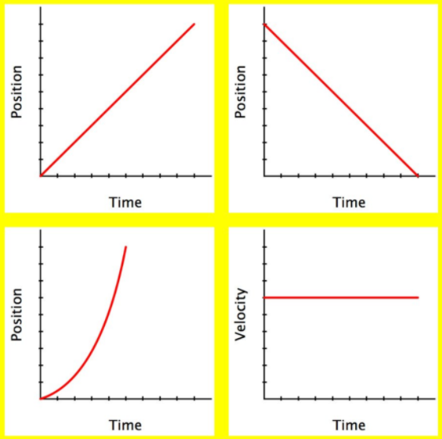
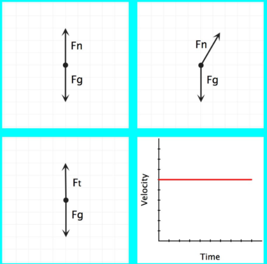
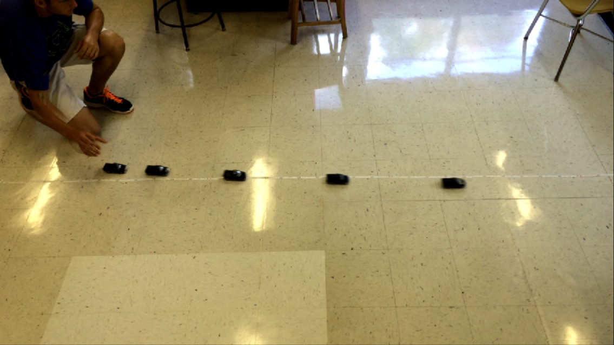

layout: true <div class="my-header"><img src="images/scsdLogo.png" style="height: 70px;"/></div> --- class: schodack ##2021.05.25 Regents Physics 1. Test your car: - How fast does is it moving the **instant before** it hits the block - Does your car's speed change with mass? - Can you make any adjustments to make your car faster? 2. Design Slides: 1. Purpose 2. Materials 3. Methods - Describe your building process. Summarize the problems you encountered during the building process and how you solved them. 4. Photograph/diagram: Label any design features 5. Data (to be completed on day of crash or later) 6. Calculations (to be completed on day of crash or later) 7. Performance Assessment (to be completed on day of crash or later) 8. Conclusions (to be completed on day of crash or later) --- class: schodack ##2021.05.24 Regents Physics 1. Determine - How fast your car is moving the instant **before** your car hits the block - If your car's speed changes with car mass - Can you make adjustments to your car so that is goes faster? Note: - Be sure to record somewhere how you are measuring/calculating the speed of your car at the bottom of the ramp Coming Up: - Thursday: What is momentum? What is impulse? --- class: schodack ##2021.05.18 Regents Physics (TF) 1. Paper Car Crash Project 2. Building/Designing your Car 1.0 --- class: schodack ##Key Question - Is it possible to build a car frame and body from paper and glue that is strong enough to protect a raw egg during a head-on collision? - What engineering and design features determine a vehicle’s crashworthiness? --- class: schodack ## Purpose The object of the Paper Car Crash Contest is to apply your science and engineering knowledge and skills to design and build the most crashworthy car that includes a minimum of three safety design features. The winning car’s crashworthiness will be based on two criteria: 1. The car with the greatest momentum at the time of collision, and, 2. A car in which the occupant (raw egg) is neither injured (cracked shell) nor killed (broken shell) as a result of the collision. --- class: schodack ## Design Product/Presentation Your challenge is to design and build a car with the greatest momentum (i.e., fast and massive) using only two sheets of copy paper and unlimited amounts of glue for the car’s frame and body. Your paper car must be able to carry a raw egg down an inclined track ramp and protect it during a crash with a concrete block. Your teacher will provide the wheels, axles, and axle housing for construction of your car. Read the Rules & Specifications listed below before beginning your design process and remember that in order to win, you must have BOTH a car with the greatest momentum AND an egg occupant that survives the crash unharmed. On the day before the car crash contest, you must introduce your design to the class and identify ***at least 3 safety design features*** you incorporated into your car’s design. --- class: schodack ##Rules & Specifications 1. Maximum car width: less than equal to 7.5 centimeters (including axles and wheels) 2. Maximum car length: less than or equal to 16.5 centimeters 3. Minimum car mass without the egg: greater than or equal to 40 grams 4. Glue, paper, wheels, axles, and the straw-axle housing are the only construction materials allowed. The entire frame of the car must be made of paper and glue. 5. Your vehicle will be disqualified if it exceeds length and width dimensions, does not meet minimum mass requirements, or contains stickers, paint, tape, cardboard or any other non-licensed materials that contribute to the structural integrity of the vehicle. 6. Vehicle designs must allow for easy access to and removal of the egg (occupant) for inspection after the crash. 7. Vehicle designs should be able to withstand 2-3 trials/collisions without parts replacement or repairs. 8. There can be no physical contact between the vehicle and the designer once the vehicle has been released onto the track. 9. All vehicles must visibly display the following information on their frames: - vehicle name - builder’s name - vehicle length in centimeters - vehicle mass in grams --- class:schodack ##2021.04.27 Regents Physics (TF) .qotd[❓ of the 📆: What's your favorite thing about the area/city/state you live in?] 1. Finish analyzing Elastic Potential Energy Lab 2. Applying Energy Equations: Bungee Jumper --- class:schodack ##2021.04.26 Regents Physics (MR) .qotd[❓ of the 📆: What's your favorite thing about the area/city/state you live in?] 1. Finish analyzing Elastic Potential Energy Lab 2. Applying Energy Equations: Bungee Jumper --- class:schodack ##Bungee Jumper To Do: ✅ Measure the spring constant of your spring ✅ Use energy to predict how far above the ground your mass will be at its lowest point ✅ Measure using a motion sensor ✅ Document your process and information --- class:schodack ##2021.04.23 Regents Physics (TF) .qotd[❓ of the 📆: What is your favorite meal to cook and why?] 1. CER 📊 Questions: Discuss as a class (Note: finish now if you haven't!) 2. Superconductor Lab: Height vs. Speed - Finish collecting data and discuss results 3. Elastic Potential Energy Lab --- class:schodack ##2021.04.22 Regents Physics .qotd[❓ of the 📆: What is your favorite meal to cook and why?] 1. Spring Shot Lab 2. Comparing Results of Superconductor and Spring Shot Lab 3. Energy Equations --- #2021.04.20 Regents Physics .qotd[❓ of the 📆: How do you stay balanced? 🧘🏻♀️] 1. Tic Tac Bounce 2. Claim-Evidence-Reasoning with LOL Bar Graphs --- class: schodack ##2021.04.16 Regents Physics .qotd[❓ of the 📆: What’s your idea of a great day?] 1. Finish Energy 📊 2. Whiteboard your assigned problem(s) 3. Go Over 📊 --- class: schodack ##2021.04.13 Regents Physics .qotd[❓ of the 📆: If you were featured on the local news, what would you most likely be on there for?] 1. LOL or Energy Bar Graphs 📊 2. Comparing and whiteboarding 📊 (Note: We will save the superconductor lab results to compare to future labs) --- class: schodack ##2021.03.30 Regents Physics .qotd[❓ of the 📆: Who is the most competitive person you know?] 1. Bungee Jumper Situation 2. 🥧 Pie Chart Situations 3. Definitions 3. 📊 --- class: schodack ##2020.12.22 Regents Physics .qotd[❓ of the 📆: Which list are you on? 🎅🏻] 1. Friction Lab --- class: schodack #Do Now: ## Which of these does not belong? .center[(1)  (2) ] Come up with **two** answers for each photo (1) and (2). Explain your reasoning for each selection. --- class:schodack #2020.12.07 .qotd[❓ of the 📆: How often do you dance 💃🏻🕺🏻?] 1. Do Now 2. Card Sort ➡ Find in Canvas: Dynamics Class 3 3. Free Body Diagram Practice 4. Exit Slip - Zeke HW: - Practice Free Body Diagrams --- class: schodack .left-column[<img src="IMG-4831.JPG" width = "300 px"/>] .right-column[# ] --- class:schodack #2020.12.04 Regents Physics .qotd[❓ of the 📆: What was your childhood dream job? Is it still your dream job?] 1. Do Now ➡ Review your answers to Tug-of-War situations: - Make an argument (claim-evidence-reasoning) for how forces/combinations of force lead to: - Constant Velocity - Acceleration 2. Tug-of-war situations: - Whiteboard assigned problem and be prepared to share 3. Interactions 4. Interaction "Stations" Desmos --- class:schodack ##Tug-of-War Simulation [Link](https://phet.colorado.edu/sims/html/forces-and-motion-basics/latest/forces-and-motion-basics_en.html?screens=1) Note: check all 3 boxes in the top right True/False: Determine whether each of the following statements are true. Support your claims with evidence and examples. (Remember that you can add/remove people while the cart is moving.) 1. A person's location on the rope matters. 2. Different combinations of people can produce the same sum of forces. 3. The sum of the forces on the cart is always equal to the addition of the individual forces. 4. It is impossible for the cart to accelerate to the left if there are people pulling it to the right. 5. The side with the bigger person will always win. 6. The side with more people will always win. 7. It is impossible to make the cart decrease in speed. 8. It is impossible to make the cart move at a steady speed. 9. The cart will always move in the direction of the sum of the forces. 10. If the sum of the forces is zero, the cart must be at rest. --- class: schodack ##Contact Interactions Interaction between two objects that results in **compression**, **tension** or **shearing**. -- **Compression** ➡ Squishing a material together -- **Extension** ➡ Stretching a material -- **Shearing** ➡ Pulling surfaces parallel to each other --- class: schodack ##Interaction "Stations" [Desmos Activity](https://student.desmos.com/join/je623a) --- class:schodack ##Do Now (on Whiteboard): Describe the motion in as many ways as possible (graphs, diagrams, equations, verbal descriptions, etc) .center[<video preload="auto" width="80%" height="auto" data-setup="{}" loop controls><source src="videos/gliders.mp4" type="video/mp4" /></video>] --- class:schodack ##Do Now -- Part 2 How does this motion occur? What creates this motion? .center[<video preload="auto" width="80%" height="auto" data-setup="{}" loop controls><source src="videos/gliders.mp4" type="video/mp4" /></video>] --- class:schodack ##2020.12.01 .qotd[❓ of the 📆: What show did you binge on over Thanksgiving 📺?] 1. Do Now 2. Bowling Ball Motions 4. Tug-of-War Simulation [Link](https://phet.colorado.edu/sims/html/forces-and-motion-basics/latest/forces-and-motion-basics_en.html?screens=1) HW (All Posted in Canvas): - N1L Video Vignette --- class:schodack ##Bowling Ball Physics 🎳 - What conditions create/cause ***constant velocity***? - What conditions create/cause ***accelerations***? What conditions create or cause ***constant acceleration***? -- 🤔 I have a flimsy meterstick and a bowling ball -- describe how I can accelerate the bowling ball from rest to a fast speed -- 🤔 How can I slow the bowling ball down from a fast speed to rest? -- 🤔 How can I keep the bowling ball rolling at a constant velocity? --- class:schodack ##Tug-of-War Simulation [Link](https://phet.colorado.edu/sims/html/forces-and-motion-basics/latest/forces-and-motion-basics_en.html?screens=1) Note: check all 3 boxes in the top right True/False: Determine whether each of the following statements are true. Support your claims with evidence and examples. (Remember that you can add/remove people while the cart is moving.) 1. A person's location on the rope matters. 2. Different combinations of people can produce the same sum of forces. 3. The sum of the forces on the cart is always equal to the addition of the individual forces. 4. It is impossible for the cart to accelerate to the left if there are people pulling it to the right. 5. The side with the bigger person will always win. 6. The side with more people will always win. 7. It is impossible to make the cart decrease in speed. 8. It is impossible to make the cart move at a steady speed. 9. The cart will always move in the direction of the sum of the forces. 10. If the sum of the forces is zero, the cart must be at rest. --- class: schodack ##2020.11.24 Regents Phyiscs .qotd[❓ of the 📆: What skill or talent do you most want to learn?] 1. Canvas - Go to: [schodack.instructure.com](https://schodack.instructure.com) and sign in with your school Google Account 2. Take Quiz - Submit a photo on Canvas & Turn in hard copy 3. Forces Pretest: - Just do your best and hand it in -- you will not get a grade for this. --- class: schodack ##2020.11.23 Regents Phyiscs .qotd[❓ of the 📆: What skill or talent do you most want to learn?] 1. Canvas: go to: [schodack.instructure.com](https://schodack.instructure.com) and sign in with your school Google Account 2. Take Quiz - Submit a photo on Canvas & Turn in hard copy 3. Forces Pretest: - Just do your best and hand it in -- you will not get a grade for this. --- class: thanksgiving ##2020.11.19 Regents Physics .qotd[❓ of the 📆: What's your hottest 🔥 of hot takes?] 1. Lab Practical: Distance between photogates HW: - Quiz on solving word Problems on Monday (packet is great practice for this) --- class: thanksgiving #### How far apart do the photogates need to be to for them to measure a time of `\(\Delta t_2 =0.12 \)` seconds? .center[<img src="images/ramppractical.png" width = "800 px"/>] ####Derive an equation for `\(\Delta x_2\)` in terms of `\(a\)`, `\(\Delta x_1\)`, and `\(t\)` --- class: thanksgiving ##📝 Notes: ####Write yourself some notes describing the problem-solving process for this --- class: thanksgiving ##🔌 Extensions ####In your notebook answer the following questions -- - You (hypothetically) repeat this experiment on a a steeper ramp. Will your `\(\Delta x_2\)` increase, decrease, or remain the same to keep the same `\(\Delta t \)`? Justify your answer by citing our derived equation. -- - A peer in you class claims that shortening the distance between the two photogates by moving photogate 1 down the ramp towards photogate 2 (while keeping photogate two stationary) will decrease the time that it takes to move through the photogates. Justify this with **two** reasons from our derivation. --- class:schodack ##Do Now (on a whiteboard): Using the equation from last class (`\(d = v_i t + \frac{1}{2}at^2\)`) solve the following problem: A racecar moving at 30 m/s accelerates at 12.5 m/s/s for 4 seconds. Determine the displacement of the racecar over these 4 seconds. --- class: photoback background-image: url('https://media.giphy.com/media/1jl173guBKkbvC03rQ/giphy.gif') ##2020.11.16 Regents Physics .qotd[❓ of the 📆: If you had a 🛥️ boat 🚢, what would you name it?] 1. ✔️ Do Now 2. Regents Problem Solving using questions HW: - Finish Practice Packet - Quiz on solving word Problems on Tuesday --- class: schodack ##Kinematic Equations: $$ \bar{v} = \frac{d}{t}$$ $$ a = \frac{\Delta v}{t}$$ $$v_f = v_i + at$$ $$d = v_i t + \frac{1}{2}at^2$$ $$v_f^2 = v_i^2 + 2ad$$ --- class: thanksgiving ##2020.11.13 Regents Physics .qotd[❓ of the 📆: What's your favorite food combination?] 1. 🍽️ Buffet Quiz 2. ➗ Problem-Solving and Kinematic Equations - When done with a quiz, start solving #7 on a vertical whiteboard - When everyone is done, you will be working throught that problem as a class, so feel free to peek 👀 at other peoples boards and ask them questions. --- class: thanksgiving ##2020.11.12 Regents Physics .qotd[❓ of the 📆: What's your favorite food combination?] 1. 🍽️ Buffet Quiz 2. ➗ Problem-Solving and Kinematic Equations --- class: thanksgiving ##2020.11.10 Regents Physics .qotd[❓ of the 📆: You can have an unlimited supply of one thing for the rest of your life, what is it? Sushi? Scotch Tape? Me: 🌯] 1. Go Over 3 & 4 from homework 2. Problem Solving HW: - Buffett Quiz Thursday -- Choose the Standards you want to reasssess: - CVPM 1 I can express the motion of an object with constant velocity using narrative, mathematical, and graphical representations. - CVPM 2 I know the difference between position, distance and displacement and solve problems involving these quantities. - CVPM 3 I can solve problems involving average speed and velocity, and instantaneous speed and velocity. - ***CAPM 2* I can interpret/draw motion diagrams and graphs for objects moving with changing velocity.** --- class: thanksgiving ##2020.11.09 Regents Physics .qotd[❓ of the 📆: You can have an unlimited supply of one thing for the rest of your life, what is it? Sushi? Scotch Tape? Me: 🌯] 1. Go Over 3 & 4 from homework 2. Problem Solving HW: - Buffett Quiz Thursday -- Choose the Standards you want to reasssess: - CVPM 1 I can express the motion of an object with constant velocity using narrative, mathematical, and graphical representations. - CVPM 2 I know the difference between position, distance and displacement and solve problems involving these quantities. - CVPM 3 I can solve problems involving average speed and velocity, and instantaneous speed and velocity. - ***CAPM 2* I can interpret/draw motion diagrams and graphs for objects moving with changing velocity.** --- class: thanksgiving ##2020.11.06 Regents Physics .qotd[❓ of the 📆: Donut or Bagel? What flavor?] 1. 🖊️ Quiz 2. 🤔 Problem-Solving with Multiple Representations --- class: thanksgiving ##2020.11.05 Regents Physics .qotd[❓ of the 📆: What is the best board game 🎲♟️?] 1. 🖊️ Quiz 2. 🤔 Problem-Solving with Multiple Representations --- class: thanksgiving ##2020.11.03 Regents Physics .qotd[❓ of the 📆: What’s your favorite sandwich 🥪 and why?] 1. 📈 Interpreting Velocity vs. Time graphs 2. 🗨️ Discuss Answers 3. 🧮 Problem-Solving in Physics **HW** - Quiz Thursday: Graphs + Different Representations of Motion (some old stuff, some new stuff) - *CVPM 2. I know the difference between position, distance and displacement and solve problems involving these quantities* - *CVPM 3. I can solve problems involving average speed and velocity, and instantaneous speed and velocity.* - *CAPM 2. I can interpret/draw motion diagrams and graphs for objects moving with changing velocity.* --- class: thanksgiving ##2020.11.02 Regents Physics .qotd[❓ of the 📆: What’s your favorite sandwich 🥪 and why?] 1. 📈 Interpreting Velocity vs. Time graphs 2. 🗨️ Discuss Answers 3. 🧮 Problem-Solving in Physics **HW** - Quiz Thursday: Graphs + Different Representations of Motion (some old stuff, some new stuff) - *CVPM 2. I know the difference between position, distance and displacement and solve problems involving these quantities* - *CVPM 3. I can solve problems involving average speed and velocity, and instantaneous speed and velocity.* - *CAPM 2. I can interpret/draw motion diagrams and graphs for objects moving with changing velocity.* --- class: halloween ##2020.10.30 Regents Physics .qotd[❓ of the 📆: True or False? The only way to eat a kit kat is to break it part and eat one section at a time.] 1. 📸 Upload Photo of card sort to Jamboard 1. 🗃️ Discuss Card Sort 1. ✍️ Whiteboard Assigned Stacks of Graphs 2. 🗨️ Discuss Stacks of Graphs 3. 📈 Interpreting Velocity vs. Time graphs --- class: halloween ##2020.10.28 Regents Physics .qotd[❓ of the 📆: True or False? The only way to eat a kit kat is to break it part and eat one section at a time.] 1. ✍️ Whiteboard Assigned Stacks of Graphs 2. 🗨️ Discuss Stacks of Graphs 3. 📈 Interpreting Velocity vs. Time graphs --- class: halloween ##2020.10.27 Regents Physics: .qotd[❓ of the 📆: What was your favorite halloween costume?] 2. 🗣️ Board Meeting -- Present your situations 3. 📋 Work through summary chart 1. 🗃️ ️Card Sort in Pairs 2. 🥞 Stacks of Graphs Practice 3. ⚽ Ball and Ramp --- class:center, middle, halloween # 🛄 🕵️ 📡 #Claim, Evidence, Reasoning (CER) # *Does negative acceleration indicate that the object is slowing down?* --- class: halloween ##2020.10.26 Regents Physics: .qotd[❓ of the 📆: What was your favorite halloween costume?] 1. 🗃️ ️Card Sort in Pairs 2. 🥞 Stacks of Graphs Practice 3. ⚽ Ball and Ramp --- ##2020.10.23 Regents Physics .qotd[❓ of the 📆: Hanging out by a camp fire, bonfire, or fireplace?] 1. 🗃️ Finish Card Sort & Add to Packet 2. 💻 Collect Data with Carts 1. ✍️ Whiteboard board assigned situations - ✍️ Draw 3 Graphs - 🤷 Was your prediction different? How? - ✍️ Sketch Picture of Motion 2. 🗣️ Board Meeting -- Present your situations 3. 📋 Work through summary chart 4. [⏲️ If Time Allows] Card Sort Round 2 --- class:schodack ##2020.10.22 Regents Physics .qotd[❓ of the 📆: Hanging out by a camp fire, bonfire, or fireplace?] 1. ✍️ Whiteboard board assigned situations - ✍️ Draw 3 Graphs - 🤷 Was your prediction different? How? - ✍️ Sketch Picture of Motion 2. 🗣️ Board Meeting -- Present your situations 3. 📋 Work through summary chart 4. [⏲️ If Time Allows] Card Sort Round 2 **HW:** - 2.2 & 2.3 In Packet --- class:schodack ##2020.10.20 Regents Physics .qotd[❓ of the 📆: If you had to delete all but 3 apps from your smartphone, which ones would you keep?] 1. 🧊 Finish Anaylzing Dry Ice Puck Lab 2. 🔮 Card Sort Predictions 3. 🛒 Carts & Ramps Data Collection --- class:schodack ##2020.10.19 Regents Physics .qotd[❓ of the 📆: If you had to delete all but 3 apps from your smartphone, which ones would you keep?] 1. 🧊 Finish Anaylzing Dry Ice Puck Lab 2. 🔮 Card Sort Predictions 3. 🛒 Carts & Ramps Data Collection --- class: schodack #2020.10.16 Regents Physics .qotd[❓ of the 📆: What is your silliest fear? 🐍] 1. 🤔 Quiz 2. 🧊 Dry Ice Puck Lab - Screenshot graph and add to your own slide on Jamboard 3. 🗨️ Discuss initial results 4. 📈 Further analysis: - Linearizing Graph - Making a Velocity vs. time graph --- class: schodack #2020.10.15 Regents Physics .qotd[❓ of the 📆: Vacation on the beach 🏖️ or adventure in the mountains ⛰️?] 1. 🤔 Quiz 2. 🧊 Dry Ice Puck Lab - Screenshot graph and add to your own slide on Jamboard 3. 🗨️ Discuss initial results 4. 📈 Further analysis: - Linearizing Graph - Making a Velocity vs. time graph --- class:schodack #2020.10.13 Regents Physics .qotd[❓ of the 📆: Vacation on the beach 🏖️ or adventure in the mountains ⛰️?] 1. 🎯 Do Now - Practice Quiz 2. 📈 Finish 1.5? 3. 🔨 1.6 Applying the Model 4. 🌯 Model Summary: - Your summary must contain everything necessary to solve any problem to which this model applies. - Your summary must fit on one whiteboard, be uncluttered, and use large writing so that it can be seen across the room. - Your summary must use multiple representations: diagrams, graphs, equations, words, proportionalities. - Your summary must pay particular attention to how to derive equations from the graphs. **HW**: - Quiz next class - Make sure you have your dry ice puck data! --- class: schodack #2020.10.09 Regents Physics .qotd[❓📆: What did you do with our power or internet??] 1. 🎯 Practice Quizzes for a quiz NEXT FRIDAY... 2. 📈 1.5 VT Graphs 3. 🔨 1.6 Applying the Model --- class: schodack #2020.10.06 Regents Physics .qotd[❓📆: Breakfast: most important meal of the day? Or overrated? How do you fuel up for the day?)] 1. Quiz 2. VT Graphs + Area Under the Curve 3. Applying the Model HW: [] Dry Ice Puck Lab -- Finish through collecting data (first two sections) --- class: schodack #2020.10.05 Regents Physics .qotd[❓📆: Do you have any weird/unique routines or superstitions? (For example: I have to put on my left sock before my right sock, and the same for shoes, left on first.)] 1. Quiz 2. VT Graphs + Area Under the Curve 3. Applying the Model HW: [] Dry Ice Puck Lab -- Finish through collecting data (first two sections) --- class: schodack #2020.10.02 Regents Physics .qotd[❓📆: Celebrity Crush❓] 1. Do Now: Whiteboard Assigned 1.3 Problems 2. Work through 1.4 - Ask your neighbor questions about physics to discuss, use me to settle a dispute if you can't convince each other of something 3. Go over 1.4 4. 1.5 Velocity vs. Time Graphs HW: Quiz Tuesday --- class: schodack #2020.10.01 Regents Physics .qotd[❓📆: Celebrity Crush?] 1. Do Now: Practice Quiz 2. Self evaluate practice quiz with Mr. D 3. Whiteboard 1.4 + Discuss 4. 1.5 Velocity vs. Time Graphs --- class: center, middle, schodack #Walk the Graph Whiteboards --- class:center, middle <img src="images/RPWalkthegraph20 page 5.jpg" width = "400"/> <img src="images/RPWalkthegraph20 page 2.jpg" width = "450"/> --- class:center, middle <img src="images/RPWalkthegraph20 page 1.jpg" width = "450"/> <img src="images/RPWalkthegraph20 page 3.jpg" width = "400"/> --- class:center, middle <img src="images/RPWalkthegraph20 page 4.jpg" width = "425"/> --- class: schodack #2020.09.29 Regents Physics .qotd[QotD: What is your most used emoji? 🤷♂️ 🤦♂️] 1. Do now: Finish Walk the Graph Lab - Whiteboard your assigned problem 2. Multiple Representations Practice - When finished whiteboard your assigned problem 3. Interpreting Position vs. Time Graphs (finish for HW) HW: Quiz Friday on Multiple Representations 📈➡️📝 - Finish 1.3 + 1.4 in packets - I will post extra practice (optional) for the quiz --- class:schodack ##2020.09.25 Do Now: Does the boy move with a constant velocity? Answer in Claim-Evidence-Reasoning format. .center[<img src="images/littleboy.jpg" width = "800"/>] --- class:schodack Does the toy move with a constant velocity? Answer in Claim-Evidence-Reasoning format. .center[] --- class:schodack #2020.09.25 Regents Physics: .qotd[QotD: What weird quirks did you pick up from your parents?] 1. Do Now 1. Motion Maps 2. Walk the Graph Lab 3. Whiteboard your problem --- ##Motion Maps ####Represent this pictorially: .center[<img src="images/position-time.png" width = "700 px"/>] --- ##Motion Maps .center[] --- .center[<img src="images/position-time _1.png" width = "600 px"/>] .center[<img src="images/motion-map _1.png" width = "600 px"/>] --- .center[<img src="images/position-time (2).png" width = "900 px"/>] --- .center[<img src="images/motion-map (2).png" width = "900 px"/>] --- .center[<img src="images/position-time (2).png" width = "600 px"/>] .center[<img src="images/motion-map (2).png" width = "600 px"/>] --- ##Try it... .center[<img src="images/position-time (3).png" width = "700 px"/>] --- .center[<img src="images/motion-map (3).png" width = "900 px"/>] --- class:schodack #2020.09.22 Regents Physics .qotd[QotD: What did you most recently purchase?] 1. Ball Rolling left 2. Scientific Arguments 3. Rolling Ball Challenge 3: Collisions Next Class: - For homework finish rolling ball challenge 3 (if necessary) --- class:schodack #Lab: 1. Sketch you `\(x\)` vs. `\(t\)` graph from your lab on your whiteboard 2. Write the equation for the you specific model. Be sure to include units on any constants (slope and intercept) 3. Write your claim to Ava's hypothesis --- class:schodack #Ball Rolling Left - Ava's Hypothesis: <br> **Scientific Argument with Claim-Evidence-Reasoning format in physics**: **Claim:** Answer to the question -- **Evidence:** Features of the graph or measurements that support your claim -- **Reasoning:** Explain how the evidence supports your claim --- class:schodack #Rolling Ball Challenge 3 - Draw a predicted x vs. t graph on your whiteboard - Identify on your board where the balls will collide --- class:schodack #2020.09.18 Regents Physics .qotd[QotD: Do you prefer pens or pencils? Why?] 1. Do Now 2. Ball Rolling Right Pivot 3. Ball Rolling Left Pivot --- class: schodack #Ball Rolling Right 1. Open Assignment 2. Read through your answers to Part 3 + 4 3. Be prepared to discuss and ask questions! --- class: schodack #Ball Rolling Right - What do you notice is similar about all of the graphs? - What do you notice is different about the graphs? - What conclusions can we make about the motion of the bowling ball from our graphical models of motion? --- class:schodack #Ball Rolling Right - What does it all mean? -- - What does the slope represent? - For every statement: "The < **quantity on vertical axis** > goes up < **slope value with vertical units** > for every 1 < **horizontal unit** > of < **quantity on horizontal axis** >." -- - What does the intercept mean? --- class:schodack, center, middle #The Models... --- class:schodack #The Models... Math: $$y = mx + b$$ -- Specific Model: $$position = (75\textrm{ cm/s})time + 23 \textrm{ cm}$$ -- Generic Model: $$x = \bar{v}t + x_0$$ -- Average Velocity: $$\bar{v} = \frac{\Delta x}{\Delta t}$$ --- class:schodack, center, middle #What can we do with a model? --- class:schodack, center, middle #Make Predictions! --- #Predicting with Models - Why isn't your predicted time exactly the same as the actual time? If you think you might have made measurement mistakes, what specifically were they, and how would those mistakes affect the model? -- - Does having a non-zero percent different mean the model was wrong? Is the model still useful, even if its predictions are off a little bit? Explain. -- - Why might you need a better model of the ball than what you came up with? Think of a "real world" example where it would be important to have a more accurate model of a moving object. (When does this model for motion become limited?) --- class:schodack #Ball Rolling Left Like in Level 1, you will be plotting position vs. time for the bowling ball and generating an equation for the motion. How will the graph and equation be similar to those you found in Level 1? How will they be different? What do you see in the video that makes you think that? Explain. --- class:schodack #Ball Rolling Left Notes: - Use same video trial as last time - It was too quiet in here last time...talk to your neighbors when you have questions! --- class:schodack #Ball Rolling Left - How do the slope and intercept vary here? --- class:schodack #Velocity - is a ***vector*** quantity -- means it has two properties: size and direction - Size: how great or little the rate of position changing with time - Direction: the direction that the object is moving --- class:schodack #Ball Rolling Left - Ava's Hypothesis: <br> ##Scientific Argument with Claim-Evidence-Reasoning format in physics: **Claim:** Answer to the question -- **Evidence:** Features of the graph or measurements that support your claim -- **Reasoning:** Explain how the evidence supports your claim --- class:schodack #Welcome! .qotd[Question of the Day: Sweet or savory for breakfast?] 1. Fill out questionnaire 1. Question of the Day 2. Polar Bears 🐻❄️ around an ice hole 🧊🕳️ 2. Survival Island Share Out 2. About Physics Class 3. Tech Tools: - Pivot Interactives 4. What can you measure about Zeke? --- #Quick Questionnaire Go to: https://forms.gle/zjAjMq8iPbjqw7MQA or... .center[<img src="images/firstdayQR.png" width = "350px"/>] --- class:center, middle #Question of the Day: Sweet or savory for breakfast? --- class:photoback background-image: url("https://media.giphy.com/media/Jrpy4EB3uqVx8RpRKK/giphy.gif") The game is in the name of the game - polar bears around an ice hole - invented in the days of Ghengis Khan. A clue for you to keep you true -- like petals around a rose, you can count each bear's nose. How many polar bears do you see? [Dice Roller](https://www.random.org/dice/) --- class: schodack, center, middle #Why? What connections to physics class? --- class:schodack #Why? - You may feel frustrated as you try to figure physics out. That’s okay. -- - Physics is hard to understand until you know the “rules of the game.” -- - But, once you discover the rules, physics often seems easy and you may be surprised that others don’t understand. -- - However, remember that you didn’t always understand. -- - When you discover the rules and understand without someone just telling you the “answer”, you are excited. -- - The journey to understanding is very important. So, no one is going to tell you the answer, but we’re all here to support each other on our journeys. -- - Being told the “answer” at most gives you one answer that you didn’t know. Learning to think critically and arrive at the answer with support develops a skill that you will use to find many answers. --- class:schodack #Inquiry - make careful observations -- - gather lots of data (many roles of the dice) -- - look for patterns, compare and contrast, look for extremes -- - simply the problem being investigated (roll fewer dice) -- - constrain the variables (set dice to specific values) -- - propose a hypothesis, test it, modify it based on results, repeat --- #Survival Island 🏝️ You and your group are stranded on an deserted island 😮! -- Using *each* of your <u>unique skill's</u> develop a plan to escape the island. -- Whiteboard your response (one person) - please wash your hands, or use hand sanitizer before and after using the markers - also remain at your tables physically distant from your group members. -- Be prepared to share out your plan to escape the island as a group. Each of you should offer a part of the plan to the class. --- class: schodack #Learning happens in two phases: information transfer and sense-making .left-column[ ##Information Transfer .center[]] .right-column[ ##Sense-Making .center[]] ??? Note back to the polar bears around an ice hole: - I was providing information (how many polar bears) - You were doing the sense-making (but I helped when I took dice away or offered hints) --- class: schodack #Who/what is helping with information transfer? - [AP Daily Videos]("https://apclassroom.collegeboard.org/92/home") - [Flipping Physics]("https://www.flippingphysics.com/ap-physics-1.html") - [Khan Academy Videos]("https://www.khanacademy.org/science/ap-physics-1") - [OpenStax College Physics]("https://openstax.org/books/college-physics-ap-courses/pages/1-connection-for-ap-r-courses") - Mr. Porter - and more... **All resources will be vetted, selected, and curanted by Mr. Porter** --- #Who is helping with sense-making? .left-column[.center[] ##What does that look like? - Coach and cheerleader - Design and implement sense-making tasks and activities - Offer feedback and encouragement - Answer questions - Clarify information received - Give and grade assessments to provide *more* feedback] .right-column[.center[] Mr. Porter with his Regents Physics class] --- class:schodack #What is your role? <br> .left-column[.center[] - Read and take notes over assigned readings - Watch and take notes over assigned videos - Interrogate what you’re reading or watching: “Why is this true?” - Understand that just because you’ve been exposed to the information that doesn’t mean you’ve learned it yet ] .right-column[.center[] - Participate in class activities and relate them to the information from information transfer tasks - Ask lots of questions - Seek out feedback from peers and teacher - Ask lots of questions - Engage with homework meaningfully (don’t just Google for answers) - Ask lots of questions - Become comfortable with mistakes and being wrong at first ] --- class: schodack #Tech Tools: <img src="https://upload.wikimedia.org/wikipedia/commons/5/59/Google_Classroom_Logo.png" width = "150px"/> <img src="https://static1.squarespace.com/static/5b563343c258b4713971bd98/t/5b5634242b6a28e23446c5a1/1597687166766/" height = "150px"/> --- #Google Classroom #Code: gsf3j7n Note: you should already have an invite to the Google Classroom --- class:schodack #2020.09.15 Regents Physics .qotd[QotD: What is one weird/interesting fact about yourself?] .qotd[QotD: What slang are you really happy went out of fashion?] 1. Do Now: In your notebook (or a scrap piece of paper if you don't have one) answer the following prompts: - *What is a scientific model?* - *How do you make a scientific model?* - *How do you describe and quantify motion?* 2. Questions 2. Tech Tools (Pivot Interactives) 3. Zeke 5. Rolling Ball Lab HW: - Finish Pivot --- class:schodack #Questions - How do physics and chemistry relate? - If I need help, how? - How will labs work if we go remote - Will there be other hands-on type projects? - How was your summer? - Am I allowed to use the rubiks cube? - How hard is the regents for the class? - What is your grading policy? Are you coaching bball this year? - Are we going to be doing a lot of hands on stuff? --- #Pivot Interactives https://www.pivotinteractives.com/ 1. Click Join a class 2. Use the class key: 65da1024 (or join from Google Classroom) 3. Open First Assignment --- class:photoback background-image: url("images/Zeke") #I changed my mind on the lab we were going to do...but here is my dog Zeke anyways. --- class:center, middle, schodack #What do you see, think, and wonder? --- class:center, middle, schodack #How can we predict the time that the ball would be at the flag? --- class:center, middle, schodack #Pivot Tools + Practice Measurements --- class:center, middle, schodack #Video Assignments --- class:center, middle, schodack #What data should we collect and how should we do it? --- class:center, middle, schodack #Board Meeting --- class:center, middle, schodack #Predictions --- class:schodack #Exit Ticket On google classroom answer: What did we model today? How did we model it? What is the model for?